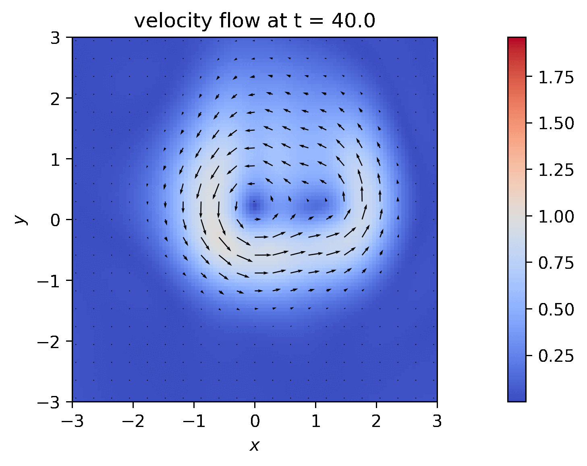
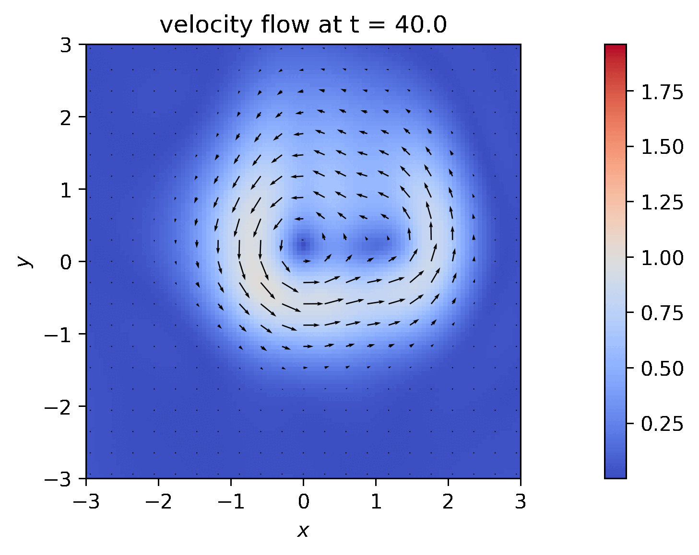

Division of Mathematical Sciences
School of Physical and Mathematical Sciences
Nanyang Technological University
21 Nanyang Link, Singapore 637371
Tel. +65 6513 7176
|
Nicolas Privault
Division of Mathematical Sciences School of Physical and Mathematical Sciences Nanyang Technological University 21 Nanyang Link, Singapore 637371 Tel. +65 6513 7176 |
nprivault at ntu.edu.sg
|
|
| Books Research Teaching |
|
(with J.-C. Breton)
Wasserstein distance estimates for jump-diffusion processes.

(with Q. Liu)
Normal approximation of subgraph counts in the random-connection model.

(with C. Mau)
Mixing of linear operators under infinitely divisible measures on Banach spaces,
Journal of Mathematical Analysis and Applications.

(with M. Khabou and A. Réveillac)
Normal approximation of compound Hawkes functionals,
Journal of Theoretical Probability. 
(with J.Y. Nguwi and G. Penent)
A deep branching solver for fully nonlinear partial differential equations,
Journal of Computational Physics
499 (2024) 112712.

(with J.Y. Nguwi)
Numerical solution of the modified and non-Newtonian Burgers equations by stochastic coded trees,
Japan Journal of Industrial and Applied Mathematics
40 (2023) 1745-1763.

(with J.-C. Breton, Y. El Khatib and J. Fan)
A q-binomial extension of the CRR asset pricing model,
Stochastic Models
39 (2023) 772-796.

(with G. Penent)
Existence of solutions for nonlinear elliptic PDEs with fractional Laplacians on open balls,
Communications on Pure and Applied Analysis
22 (2023) 2646-2660.

(with J.Y. Nguwi)
A deep learning approach to the probabilistic numerical solution of path-dependent partial differential equations,
Partial Differential Equations and Applications
4 (2023) Paper No. 37.

(with J.Y. Nguwi and G. Penent)
Numerical solution of the incompressible Navier-Stokes equation by a deep branching algorithm,
Communications in Computational Physics
34 (2023) 261-289.

 

(with J.Y. Nguwi and G. Penent)
A fully nonlinear Feynman-Kac formula with derivatives of arbitrary orders,
Journal of Evolution Equations
23 (2023) Paper No. 22.

(with I. Flint and G. L. Torrisi)
The Malliavin-Stein method for normal random walks with dependent increments,
Journal of Stochastic Analysis
4 (2023) Art. 1.

(with M. Thieullen)
Closed-form modeling of neuronal spike train statistics by multivariate Hawkes processes,
Physical Review E
106 (2022) Paper No. 054410.
 jointcumulants.mw
-
jointcumulants.nb
jointcumulants.mw
-
jointcumulants.nb
(with G. Penent)
Numerical evaluation of ODE solutions by Monte Carlo enumeration of Butcher series,
BIT Numerical Mathematics
62 (2022) 1921-1944.
 ODE.mw
-
ODE.nb
-
ODE.py
ODE.mw
-
ODE.nb
-
ODE.py
Moments of Markovian growth-collapse processes,
Advances in Applied Probability
54 (2022) 1070-1093.
 moments.mw -
moments.nb
moments.mw -
moments.nb
(with S. Ly)
G-expectation approach to stochastic ordering,
Frontiers of Mathematical Finance
1 (2022) 343-374.

(with G. Serafin)
Berry-Esseen bounds for functionals of independent random variables,
Electronic Journal of Probability
27 (2022) No. 71, 37pp.

(with G. Penent)
Existence and probabilistic representation of the solutions of semilinear parabolic PDEs with fractional Laplacians,
Stochastics and Partial Differential Equations: Analysis and Computations
10 (2022) 446-474.

(with G. Serafin)
Normal approximation for generalized U-statistics and weighted random graphs, Stochastics and Stochastics Reports
94 (2022) 432-458.

(with J.Y. Nguwi)
A constructive approach to existence of equilibria in time-inconsistent stochastic control problems, SIAM Journal on Control and Optimization
60 (2022) 674-698.

(with J.Y. Nguwi)
Characterization of stochastic equilibrium controls by the Malliavin calculus, Stochastics & Dynamics 22 (2022) Paper No. 2150054, 1-32.

(with J.-C. Breton)
Wasserstein distance estimates for stochastic integrals by forward-backward stochastic calculus, Potential Analysis
56 (2022) 1-20.

Recursive computation of the Hawkes cumulants,
Statistics & Probability Letters 177 (2021) Paper No. 109161, 1-11.
 jointmoments.mw -
jointmoments.nb
jointmoments.mw -
jointmoments.nb
(with S. Ly)
Stochastic ordering by g-expectations,
Probability, Uncertainty and Quantitative Risk
6 (2021) 61-98.

(with I. Flint)
Computation of coverage probabilities in a spherical germ-grain model,
Methodology and Computing in Applied Probability
23 (2021) 491-502.

Cardinality estimation for random stopping sets based on Poisson point processes,
ESAIM Probability & Statistics
25 (2021) 87-108.
 codes.R
codes.R
(with T. Teoh)
Second-order multi-object filtering with target interaction using determinantal point processes,
Mathematics of Control, Signal and Systems
32 (2021) 569-609.

(with L. Wang)
Stochastic SIR Lévy jump model with heavy-tailed increments,
Journal of Nonlinear Science
31 (2021) Article No. 15, 28 pp.

Nonstationary shot-noise modeling of neuron membrane potentials by closed-form moments and Gram-Charlier expansions,
Biological Cybernetics
114 (2020) 499-518.

(with I. Flint and G. L. Torrisi)
Bounds in total variation distance for discrete-time processes on the sequence space, Potential Analysis
52 (2020) 223-243.

(with J.-C. Breton)
Integrability and regularity of the flow of stochastic differential equations with jumps, Theory of Probability & Its Applications
65 (2020) 103-125.

(with I. Polak)
Cournot games with limited demand: from multiple equilibria to stochastic equilibrium,
Applied Mathematics and Optimization
81 (2020) 195-220.

(with G. Serafin)
Normal approximation for sums of weighted U-statistics - application to Kolmogorov bounds in random subgraph counting, Bernoulli
26 (2020) 587-615.

Moments of k-hop counts in the random-connection model, Journal of Applied Probability
56 (2019) 1106-1121.

(with I. Flint and G. L. Torrisi)
Functional inequalities for marked point processes,
Electronic Journal of Probability
24 (2019) No. 116, 40pp.

(with S.C.P. Yam and Z. Zhang)
Poisson discretizations of Wiener functionals and Malliavin operators with Wasserstein estimates,
Stochastic Processes and their Applications
129 (2019) 3376-3405.

Third cumulant Stein approximation for Poisson stochastic integrals,
Journal of Theoretical Probability
32 (2019) 1461-1481.

Stein normal approximation for multidimensional Poisson random measures by third cumulant expansions,
ALEA - Latin American Journal of Probability and Mathematical Statistics
15 (2018) 1141-1161.

(with B. Kızıldemir)
Supermodular ordering of Poisson and binomial random vectors by tree-based correlations, Probability & Mathematical Statistics 38 (2018) 385-405.

(with X. Lu, D. Niyato, H. Jiang, and P. Wang)
Managing physical layer security in wireless cellular networks: a cyber insurance approach, IEEE Journal on Selected Areas in Communications 36 (2018) 1648-1661.

Extended Mellin integral representations for the absolute value of the gamma function,
Analysis
38 (2018) 11-20.

(with H.-B. Kong, I. Flint, P. Wang, and D. Niyato)
Fog Radio Access Networks: Ginibre Point Process Modeling and Analysis,
IEEE Transactions on Wireless Communications 17 (2018) 5564-5580.

(with G. Serafin)
Stein approximation for functionals of independent random sequences,
Electronic Journal of Probability
23 (2018) No. 4, 34 pp.

(with X. Wei)
Fast computation of risk measures for variable annuities with additional earnings by conditional moment matching,
ASTIN Bulletin - The Journal of the International Actuarial Association
48 (2018) 171-196.
 VaR-CTE.c
VaR-CTE.c
(with Y. Liu)
A recursive algorithm for selling at the ultimate maximum in regime-switching models,
Methodology and Computing in Applied Probability
20 (2018) 369-384.

(with I. Polak)
A stochastic newsvendor game with dynamic retail prices,
Journal of Industrial and Management Optimization
14 (2018) 731-742.

(with I. Flint, H.-B. Kong, P. Wang, and D. Niyato)
Analysis of heterogeneous wireless networks using Poisson hard-core hole process,
IEEE Transactions on Wireless Communications 16 (2017) 7152-7167.

(with Y. Liu)
An integration by parts formula in a Markovian regime switching model and application to sensitivity analysis,
Stochastic Analysis and Applications 35 (2017) 919-940.

(with A. Prayoga)
Pricing CIR yield options by conditional moment matching,
Asia-Pacific Financial Markets 24 (2017) 19-38.
 CIR.c
CIR.c
(with I. Flint, H.-B. Kong, P. Wang, and D. Niyato)
Wireless energy harvesting sensor networks: Boolean-Poisson modeling and analysis,
IEEE Transactions on Wireless Communications 16 (2017) 7108-7122.

(with Y. Liu)
Selling at the ultimate maximum in a regime-switching model,
International Journal of Theoretical and Applied Finance 20 (2017) 27 pp.

(with Q.H. She)
Conditional Stein approximation for Itô and Skorohod integrals,
Statistics & Probability Letters 128 (2017) 1-7.

(with H.-B. Kong, I. Flint, P. Wang, and D. Niyato)
Exact performance analysis of ambient RF energy harvesting wireless sensor networks with Ginibre point process, IEEE Journal on Selected Areas in Communications 34 (2016) 3769-3784.

Weitzenböck and Clark-Ocone decompositions for differential forms on the space of normal martingales,
Séminaire de Probabilités XLVIII, Lecture Notes in Mathematics 2168 (2016)
231-265, Springer.

Poisson sphere counting processes with random radii,
ESAIM Probability & Statistics
20 (2016) 417-431.

(with X. Lu, I. Flint, D. Niyato, and P. Wang)
Self-sustainable communications with RF energy harvesting: Ginibre point process modeling and analysis.
IEEE Journal on Selected Areas in Communications
34 (2016) 1518-1535.

De Rham-Hodge decomposition and vanishing of harmonic forms by derivation operators on the Poisson space.
Infinite Dimensional Analysis, Quantum Probability and Related Topics
19 (2016).

(with J.D. Yu) Stratified approximations for the pricing of options on averages.
Journal of Computational Finance 19 (2016) 95-113.
 Asian.c
Asian.m
Asian.R
Asian.c
Asian.m
Asian.R
Mixing of Poisson random measures under interacting transformations.
Stochastics 88 (2016) 321-335.

(with X.F. Yang and J.-C. Zambrini)
Large deviations for Bernstein bridges.
Stochastic Processes and their Applications 126 (2016) 1285-1305.

(with N. Lim)
Analytic bond pricing for short rate dynamics evolving on matrix Lie groups. Quantitative Finance 16 (2016) 119-129.

(with Q.H. She)
Option pricing and implied volatilities in a 2-hypergeometric stochastic volatility model.
Applied Mathematics Letters 53 (2016) 77-84.

(with L. Decreusefond, I. Flint, and G. L. Torrisi)
Stochastic dynamics of determinantal processes by integration by parts.
Communications on Stochastic Analysis 9 (2015) 375-399.

Laplace transform identities for the volume of stopping sets based on Poisson point processes.
Advances in Applied Probability 47 (2015) 919-933.

(with Q.H. She)
Conditionally Gaussian stochastic integrals.
Comptes Rendus Mathematique 353 (2015) 1153-1158.

(with S. Guindon) Closed-form modeling of evolutionary rates by exponential Brownian functionals.
Journal of Mathematical Biology 71 (2015) 1387-1409.

(with H.L. Wu)
Computation of Fredholm determinants for quadratic Ornstein-Uhlenbeck functionals.
Taiwanese Journal of Mathematics 19 (2015) 1541-1559.

(with I. Flint, X. Lu, D. Niyato, and P. Wang)
Performance analysis of ambient RF energy harvesting with repulsive point process modeling.
IEEE Transactions on Wireless Communications 14 (2015) 5402-5416.

(with T.D. Nguyen and G. L. Torrisi)
Gaussian estimates for the solutions of some one-dimensional stochastic equations. Potential Analysis 43 (2015) 289-311.

(with A. Alvarez and J.A. López-Mimbela)
Blowup estimates for a family of semilinear SPDEs with time-dependent coefficients. Differential Equations & Applications
7 (2015) 201-219.

(with G. L. Torrisi)
The Stein and Chen-Stein methods for functionals of non-symmetric Bernoulli processes. ALEA - Latin American Journal of Probability and Mathematical Statistics 12 (2015) 309-356.

Stein approximation for Itô and Skorohod integrals by Edgeworth type expansions.
Electronic Communications in Probability 20 (2015) No. 35, 10 pp.

Cumulant operators for Lie-Wiener-Itô-Poisson stochastic integrals.
Journal of Theoretical Probability 28 (2015) 269-298.

(with B. Kızıldemir)
Supermodular ordering of Poisson arrays.
Statistics & Probability Letters 98 (2015) 136-143.

(with X.F. Yang and J.-C. Zambrini)
Feynman-Kac formula for Lévy processes and semiclassical (Euclidean) momentum representation.
Markov Processes and Related Fields 20 (2014) 577-600.

(with T.R. Teng)
Hedging in bond markets by the Clark-Ocone formula.
Communications on Stochastic Analysis 8 (2014) 269-288.

(with J.-C. Breton)
Factorial moments of point processes.
Stochastic Processes and their Applications
124 (2014) 3412-3428.

(with G. L. Torrisi)
Probability approximation by Clark-Ocone covariance representation.
Electronic Journal of Probability 18 (2013), no. 91.

(with J.-C. Breton and B. Laquerrière)
Convex comparison inequalities for non-Markovian stochastic integrals. Stochastics 85 (2013) 789-806.

(with W.I. Uy)
Monte Carlo computation of the Laplace transform of exponential Brownian functionals.
Methodology and Computing in Applied Probability
15 (2013) 511-524.

Cumulant operators and moments of the Itô and Skorohod integrals.
C. R. Acad. Sci. Paris 351 (2013) 397-400.

(with Y.T. Ma)
Convex concentration for some additive functionals of jump stochastic differential equations.
Acta Mathematica Sinica
29 (2013) 1449-1458.

(with D.C. Yang)
Infinite divisibility of interpolated gamma powers.
Journal of Mathematical Analysis and Applications
405 (2013) 373-387.

(with Y.J. Lee and H.H. Shih)
Clark-Ocone formula by the S-transform on the Poisson white noise space.
Communications on Stochastic Analysis 6 (2012) 513-524.

Moments of Poisson stochastic integrals with random integrands.
Probability & Mathematical Statistics 32 (2012) 227-239.

Laplace transform identities and measure-preserving transformations on the Lie-Wiener-Poisson spaces.
Journal of Functional Analysis 263 (2012) 2993-3023.

Invariance of Poisson measures under random transformations.
Annales de l'Institut Henri Poincaré 48 (2012) 947-972.

Girsanov identities for Poisson measures under quasi-nilpotent transformations.
Annals of Probability 40 (2012), 1009-1040.

(with T.R. Teng)
Risk-neutral hedging of interest rate derivatives.
Risk and Decision Analysis 3
(2012) 201-209.

(with A. Réveillac) SURE shrinkage of Gaussian paths and signal identification.
ESAIM Probability & Statistics 15 (2011), 180-196.

(with G. L. Torrisi)
Density estimation of functionals of spatial point processes with application to wireless networks.
SIAM Journal on Mathematical Analysis
43 (2011) 1311-1344.

(with J.A. López-Mimbela) Large time behavior of reaction-diffusion equations with Bessel generators.
Journal of Mathematical Analysis and Applications
383 (2011) 560-572.

(with C. Pintoux)
The Dothan pricing model revisited.
Mathematical Finance
21 (2011) 355-363.

Generalized Bell polynomials and the combinatorics of Poisson central moments.
Electronic Journal of Combinatorics
18 (2011), Paper 54.

Random Hermite polynomials and Girsanov identities on the Wiener space. Infinite Dimensional Analysis, Quantum Probability and Related Topics
13 (2010) 663-675.

(with B. Laquerrière)
Deviation inequalities for exponential jump-diffusion processes.
Theory of Stochastic Processes 16 (2010) 67-72.

(with J.-C. Zambrini) Stochastic deformation of integrable dynamical systems and random time symmetry.
Journal of Mathematical Physics 51 (2010).

Covariance identities and mixing of random transformations on the Wiener space.
Communications on Stochastic Analysis 4 (2010) 299-309.

(with C. Pintoux)
A direct solution to the Fokker-Planck equation for exponential Brownian functionals.
Analysis and Applications 8 (2010) 287-304.

(with D. David)
Numerical computation of Theta in a jump-diffusion model by integration by parts. Quantitative Finance 9 (2009) 727-735.

(with S. Loisel)
Sensitivity analysis and density estimation for finite-time ruin probabilities.
Journal of Computational and Applied Mathematics 230 (2009) 107-120.

Moment identities for Skorohod integrals on the Wiener space and applications.
Electronic Communications in Probability 14 (2009) 116-121.

(with A. Réveillac) Stein estimation of Poisson process intensities.
Statistical Inference for Stochastic Processes 12 (2009)
37-53.

Moment identities for Poisson-Skorohod integrals and
application to measure invariance.
C. R. Acad. Sci. Paris 347 (2009) 1071-1074.

A probabilistic interpretation to the symmetries of a discrete heat equation.
Séminaire de Probabilités XLI, Lecture Notes in Mathematics 1934
(2008) 379-399, Springer.

(with M. Arnaudon and J.-C. Breton)
Convex ordering for random vectors using predictable representation.
Potential Analysis 29 (2008) 327-349.
 - erratum
- erratum
(with C. Houdré) Isoperimetric and related bounds on configuration spaces. Statistics & Probability Letters 78 (2008) 2154-2164.

(with A. Réveillac) Stein estimation for the drift of Gaussian processes using the Malliavin calculus.
Annals of Statistics 36 (2008) 2531-2550.

(with J.-C. Breton)
Bounds on option prices in point process diffusion models.
International Journal of Theoretical and Applied Finance
11 (2008) 597-610.

(with X. Wei) Integration by parts for point processes and Monte Carlo estimation.
Journal of Applied Probability 44 (2007) 806-823.

(with J.-C. Breton) Convex comparison inequalities for exponential jump-diffusion processes.
Communications on Stochastic Analysis 1 (2007) 263-277.

(with J.-C. Breton and C. Houdré) Dimension free and infinite variance tail estimates on Poisson space.
Acta Applicandae Mathematicae 95 (2007) 151-203.

(with Th. Klein and Y.T. Ma) Convex concentration inequalities and forward-backward stochastic calculus.
Electronic Journal of Probability 11 (2006) 486-512.

(with A. Réveillac)
Superefficient drift estimation on the Wiener space.
C. R. Acad. Sci. Paris 343 (2006) 607-612.

(with X. Zhang) Deviation inequalities and the law of iterated logarithm on the path space over a loop group. Stochastics 77 (2005) 515-536.

(with J.A. López-Mimbela) Blow-up and stability of semilinear PDE's with gamma generators. Journal of Mathematical Analysis and Applications 307 (2005) 181-205.

(with J.-C. Zambrini) Euclidean quantum mechanics in the momentum representation. Journal of Mathematical Physics 46 (2005).

(with U. Franz and R. Schott) Non-Gaussian Malliavin calculus on real Lie algebras.
Journal of Functional Analysis 218 (2005) 347-371.

(with X. Wei) A Malliavin calculus approach to sensitivity analysis in insurance. Insurance: Mathematics and Economics
35 (2004) 679-690.

(with J.-C. Zambrini) Markovian bridges and reversible
diffusions with jumps. Annales de l'Institut Henri Poincaré
40 (2004) 599-633.

(with A. Joulin) Functional inequalities for discrete gradients and applications to the
geometric distribution. ESAIM Probability & Statistics
8 (2004) 87-101.

(with U. Franz) Quasi-invariance formulas for components of quantum Lévy processes. Infinite Dimensional Analysis, Quantum Probability and Related
Topics 7 (2004) 131-145.

(with Y. El Khatib) Computations of Greeks in a market with jumps via the Malliavin calculus. Finance & Stochastics 8 (2004) 161-179.

(with H. Ouerdiane) Asymptotic estimates for white noise distributions.
C. R. Acad. Sci. Paris 338 (2004) 799-804.

(with Y. El Khatib) Hedging in complete markets driven by
normal martingales. Applicationes Mathematicae
30 (2003) 147-172.

(with F.Q. Gao) Clark formula and
logarithmic Sobolev inequalities for Bernoulli measures. C. R. Acad. Sci. Paris
336 (2003) 51-56.

(with M. Mensi) Conditional calculus and enlargement of
filtration on Poisson space. Stochastic Analysis and
Applications 21 (2003) 183-204.

(with U. Franz and R. Schott) Smoothness of Wigner densities on the affine algebra.
C. R. Acad. Sci. Paris
337 (2003) 609-614.

(with C. Houdré) Concentration and
deviation inequalities in infinite dimensions via covariance representations. Bernoulli 8 (2002) 697-720.

Distribution-valued iterated gradient and chaotic
decompositions of Poisson jump times functionals. Publicacions Matemàtiques
46 (2002) 27-48.

(with W. Schoutens) Discrete chaotic calculus and covariance
identities. Stochastics and Stochastics Reports 72 (2002) 289-315.

Splitting of Poisson noise and Lévy processes on real Lie
algebras. Infinite Dimensional Analysis, Quantum Probability and Related
Topics 5 (2002) 21-40.

Extended covariance identities and inequalities.
Statistics & Probability Letters 55 (2001) 247-255.

Connections and curvature in the Riemannian geometry of
configuration spaces. Journal of Functional Analysis 185 (2001) 367-403.

A characterization of grand canonical Gibbs measures by
duality. Potential Analysis 15 (2001) 23-38.

Quantum stochastic calculus for the uniform measure and
Boolean convolution.
Séminaire de Probabilités XXXV, Lecture Notes in Mathematics 1755
(2001) 28-47, Springer.

On logarithmic Sobolev inequalities for normal
martingales. Annales de la Faculté des Sciences de Toulouse 9 (2000)
509-518.

(with J.L. Solé and J. Vives) Chaotic Kabanov formula for the
Azéma martingales. Bernoulli 6 (2000) 633-651.

Hypothesis testing and Skorokhod stochastic integration. Journal of
Applied Probability 37 (2000) 560-574.

(with K. Aase, B. Øksendal and J. Ubøe) White noise generalizations of the
Clark-Haussmann-Ocone theorem, with application to mathematical finance.
Finance & Stochastics 4 (2000) 465-496.

(with C.A. Tudor) Skorokhod and pathwise stochastic calculus with respect
to an L2 process. Random Operators and Stochastic Equations
8 (2000) 201-224.

Connection, parallel transport, curvature
and energy identities on spaces of configurations. C. R. Acad. Sci. Paris
330 (2000) 899-904.

(with J.L. Wu) Poisson stochastic integration in Hilbert spaces.
Annales Mathématiques Blaise Pascal 6 (1999) 41-61.

(with J.J. Prat) Explicit stochastic analysis of Brownian motion and
point measures on Riemannian manifolds. Journal of Functional Analysis
167 (1999) 201-242.

Equivalence of gradients on configuration spaces. Random Operators
and Stochastic Equations 7 (1999) 241-262.

Multiple stochastic integral expansions of arbitrary Poisson jump times
functionals. Statistics & Probability Letters 43 (1999) 179-188.

A calculus on Fock space and its probabilistic interpretations.
Bulletin des Sciences Mathématiques 123 (1999) 97-114.

An analytic approach to stochastic calculus. C. R. Acad. Sci. Paris
326 (1998) 353-358.

Skorohod stochastic integration with respect to non-adapted processes on
Wiener space. Stochastics and Stochastics Reports 65 (1998) 13-39.

Absolute continuity in infinite dimensions and anticipating stochastic
calculus. Potential Analysis 8 (1998) 325-343.

A pointwise equivalence of gradients on configuration
spaces. C. R. Acad. Sci. Paris 327 (1998) 677-682.

Calcul des variations stochastique pour la mesure de densité
uniforme. Potential Analysis 7 (1997) 577-601.

On the independence of multiple stochastic integrals
with respect to a class of martingales. C. R. Acad. Sci. Paris 323
(1996) 515-520.
 (see also here).
(see also here).
A
different quantum stochastic calculus for the Poisson process. Probability
Theory and Related Fields 105 (1996) 255-278.
Une nouvelle représentation non-commutative du
mouvement brownien et du processus de Poisson. C. R. Acad. Sci. Paris
322 (1996) 959-964.
Girsanov
theorem for anticipative shifts on Poisson space. Probability Theory and
Related Fields 104 (1996) 61-76.

Calculus on Fock space and a quantum non-adapted Itô formula. C. R. Acad. Sci. Paris 323 (1996)
927-932.

A transfer principle
from Wiener to Poisson space and applications. Journal of Functional
Analysis 132 (1995) 335-360.

Calcul des variations stochastique
pour les martingales. C. R. Acad. Sci. Paris 321 (1995) 923-928.

Chaotic and variational
calculus in discrete and continuous time for the Poisson process.
Stochastics and Stochastics Reports 51 (1994) 83-109.

Inégalités de Meyer sur l'espace de Poisson. C. R. Acad.
Sci. Paris 318 (1994) 559-562. 
Décompositions
chaotiques sur l'espace de Poisson et applications. C. R. Acad. Sci. Paris
317 (1993) 385-388.
Calcul chaotique et variationnel
pour le processus de Poisson. C. R. Acad. Sci. Paris 316 (1993)
597-600.
(with X. Wei) Calibration of the LIBOR market model - implementation in PREMIA.
Bankers, Markets & Investors 99 (2009) 20-28.

Stochastic analysis of Bernoulli processes.
Probability Surveys 5 (2008) 435-483.

Combinatorics of Poisson stochastic integrals with random integrands,
in Stochastic Analysis for Poisson Point Processes: Malliavin Calculus,
Wiener-Itô Chaos Expansions and Stochastic Geometry,
edited by G. Peccati and M. Reitzner, Bocconi & Springer Series 7, 37-80, 2016.

(with L. Decreusefond, I. Flint, and G. L. Torrisi)
Determinantal point processes: a survey,
in Stochastic Analysis for Poisson Point Processes: Malliavin Calculus,
Wiener-Itô Chaos Expansions and Stochastic Geometry,
edited by G. Peccati and M. Reitzner, Bocconi & Springer Series 7,
311-342, 2016.

Potential theory in classical probability,
in Quantum Potential Theory: Structure and Applications to Physics,
Lecture Notes in Mathematics 1954,
3-59,
Springer, 2008.

An algorithm for the computation of joint Hawkes moments with exponential kernel,
Proceedings of the 53rd ISCIE International Symposium on Stochastic Systems Theory and Its Applications (SSS'21), pages 72-79. The Institute Of Systems, Control And Information Engineers, 2022.
 jointmoments.mw -
jointmoments.nb
jointmoments.mw -
jointmoments.nb
On tree-based methods for (partial) differential equations, in Oberwolfach Reports 15 (2022) 60-63.

Probabilistic representations for the solutions of nonlinear PDEs with fractional Laplacians, in Oberwolfach Reports 15 (2022) 64-66.

Invariance of Poisson point processes by moment identities with statistical applications,
Geometry and invariance in stochastic dynamics,
Springer Proceedings in Mathematics & Statistics 378 (2021) 247-265.

( with X. Lu, D. Niyato, N. Privault, H. Jiang and S.S. Wang)
A cyber insurance approach to manage physical layer secrecy for massive MIMO cellular networks, f
IEEE International Conference on Communications (ICC 2018)
Systems Security Symposifum 1-6.

(with H.-B. Kong, I. Flint, P. Wang and D. Niyato)
Modeling and analysis of wireless networks using Poisson hard-core process,
IEEE International Conference on Communications (ICC 2017) 1-6.

(with H.-B. Kong, I. Flint, P. Wang and D. Niyato)
Wireless caching helper networks: Ginibre point process modeling and analysis,
IEEE ICC 2018 Communications QoS, Reliability, and Modeling Symposium 1-6.

(with H.-B. Kong, I. Flint, P. Wang and D. Niyato)
Modeling and analysis of wireless networks using Poisson hard-core process,
IEEE International Conference on Communications (ICC 2017) 1-6.

(with H.-B. Kong, I. Flint, and D. Niyato)
On the performance of wireless energy harvesting networks in a Boolean-Poisson model,
IEEE International Conference on Communications (ICC 2016) 1-6.

(with D.C. Yang)
Variance-GGC asset price models and their sensitivity analysis,
Statistical Methods and Applications in Insurance and Finance, CIMPA School Marrakesh and El Kelaa M’Gouna, April 2013,
Springer Proceedings in Mathematics & Statistics 158 (2016) 81-101.

(with X. Lu, I. Flint, D. Niyato, and P. Wang)
Performance analysis of simultaneous wireless information and power transfer with ambient RF energy harvesting,
IEEE Wireless Communications and Networking Conference (WCNC 2015) 1303-1308.

(with I. Flint, X. Lu, D. Niyato, and P. Wang)
Performance analysis of ambient RF energy harvesting: A stochastic geometry approach. IEEE Global Communications Conference (GLOBECOM 2014) 1448-1453.

Combinatorics, moments and quasi-invariance for Poisson random integrals, in Oberwolfach Reports 10 (2013) 493-496.

Measure invariance on the Lie-Wiener path space.
Stochastic Analysis and Related Topics
in Honour of Ali Süleyman Üstünel.
Springer Proceedings in Mathematics & Statistics 22
(2012) 133-151.

Independence of some multiple Poisson stochastic integrals with variable-sign kernels.
Stochastic Processes, Finance and Control: A Festschrift in Honor of Robert J. Elliott.
Advances in Statistics, Probability and Actuarial Science 1
(2012) 73-86, World Scientific.

(with J.A. López-Mimbela)
Critical exponents for semilinear PDEs with bounded potentials.
Proceedings of the 2005 Ascona conference on stochastic analysis,
random fields and applications,
Progress in Probability 59 (2008) 245-262, Birkäuser.

(with A. Joulin)
A logarithmic Sobolev inequality for an interacting spin system under
a geometric reference measure.
Proceedings of the 2005 Levico conference,
Quantum Probability and White Noise Analysis XX
(2007) 267-273, World Scientific.

(with Y.T. Ma)
FKG inequality on the Wiener space via predictable representation.
Proceedings of the 2005 Hammamet Conference on Mathematical Analysis of Random Phenomena
(2007) 155-166, World Scientific.

Quantum stochastic calculus applied to path spaces over Lie
groups. Proceedings of the 2001 Hammamet International Conference on Stochastic Analysis and Applications (2004) 85-94, Kluwer.

(with C. Houdré) A concentration inequality on Riemannian
path space.
Proceedings of the 2002 Barcelona Conference on Stochastic Inequalities and their Applications,
Progress in Probability 56 (2003) 15-21, Birkäuser.

Quasi-invariance for Lévy processes under anticipating
shifts. Stochastic Analysis and Related Topics VIII,
Progress in Probability
53 (2003) 181-202, Birkäuser.

A relation between the Gross Laplacian and time
changes on Brownian motion.
Proceedings of the Burg Conference,
Quantum Probability and White Noise Analysis XV (2003) 195-204, World Scientific.

(with M. Jeanblanc) A complete market model
with Poisson and Brownian components. Seminar on Stochastic Analysis, Random
Fields and Applications, Ascona, 1999. Progress in Probability 52 (2002)
189-204, Birkäuser.

Weitzenböck formulas on Poisson probability spaces.
Proceedings of the Third International Conference on Geometry, Integrability and
Quantization, Varna, 2001, Coral Press Sci. Publ., Sofia, 382-394.

The Fourier-Mehler transform and generalised dilation of
Gaussian and Poisson measures. Complex Analysis and Related Topics, the
VIIIth Romanian-Finnish Seminar, Iassy, 1999, Revue Roumaine
Math. Pures Appl. 46 (2001) 85-98.

Variational calculus for a Lévy process based on a Lie
group. Stochastic analysis and Related Topics VII, Progress in Probability
48 (2000) 207-223, Birkäuser.

Différents aspects stochastiques et géométriques de la formule
de Clark. Actes du Colloque 2000 de la Société Mathématique de Tunisie,
125-136.

Independence of a class of multiple stochastic integrals.
Seminar on Stochastic Analysis, Random Fields and Applications, Ascona, 1996.
Progress in Probability 45 (1998) 333-348, Birkäuser.
 (see also here).
(see also here).
An extension of the quantum Itô table and its matrix representation.
Quantum Probability Communications X (1998) 311-320, World Scientific.
Splitting the conservation process into creation and
annihilation parts. Banach Center Publications 43 (1998) 341-348.
Construction of a quantum field linked to the Coulomb
potential. Stochastic Analysis and Related Topics VI, Progress in
Probability 42 (1998) 333-348, Birkäuser.
The Sard
inequality on two non-Gaussian spaces. Stochastic Analysis and Related
Topics VI, Progress in Probability 42 (1998) 349-356, Birkäuser.

Linear Skorohod stochastic differential equations on Poisson
space. Stochastic Analysis and Related Topics V, Progress in Probability
38 (1996) 237-253, Birkäuser.

Stochastic calculus of
variations for martingales. Proceedings of the Fifth Gregynog Symposium
(1995) 385-400, World Scientific.

(Second Edition) Introduction to Stochastic Finance with Market Examples,
Chapman & Hall/CRC Financial Mathematics Series, 2022, 662 pages.

(Third Edition) Stochastic Interest Rate Modeling with Fixed Income Derivative Pricing, Advanced Series on Statistical Science and Applied Probability, Vol. 22, World Scientific, 2021, 368 pages.

(Second Edition) Understanding Markov Chains - Examples and Applications,
Springer Undergraduate Mathematics Series, 2018, 373 pages.
errata,
codes

(with U. Franz)
Probability on Real Lie Algebras,
Cambridge Tracts in Mathematics, 2016, 302 pages.

Stochastic Finance - An Introduction with Market Examples,
Chapman & Hall/CRC Financial Mathematics Series, 2014, 441 pages.
e-book - solutions manual

(First Edition) Understanding Markov Chains - Examples and Applications,
Springer Undergraduate Mathematics Series, 2013, 354 pages.
errata

(Second Edition) An Elementary Introduction to Stochastic Interest Rate Modeling,
Advanced Series on Statistical Science and Applied Probability, Vol. 16, World Scientific, 2012, 242 pages.
e-book

中文版: 随机利率模型及相关衍生品定价, 南开大学出版社, 2010. pdf
(with A. Kohatsu-Higa and S.J. Sheu, co-editors)
Stochastic Analysis with Financial Applications,
Progress in Probability, Vol. 65,
Springer Basel, 2011,
429 pages.

Stochastic Analysis in Discrete and Continuous Settings: With Normal Martingales,
Lecture Notes in Mathematics,
Springer,
2009,
319 pages.
pdf

(First Edition) An Elementary Introduction to Stochastic Interest Rate Modeling, Advanced Series on Statistical Science and Applied Probability, Vol. 12, World Scientific, 2008, 192 pages.
(with V. Debelley) Sensitivity analysis of European options in jump-diffusion models
via the Malliavin calculus on the Wiener space.
Preprint, 2004.

An extension of stochastic calculus to certain non-Markovian processes.
Preprint 49, Université d'Evry, 1997.

(with C. Houdré) Surface measures and related functional inequalities
on configuration spaces. Prépublication 2003-04, Université de La Rochelle, 41 pages, 2003.

Monte Carlo methods and Malliavin calculus in jump models.